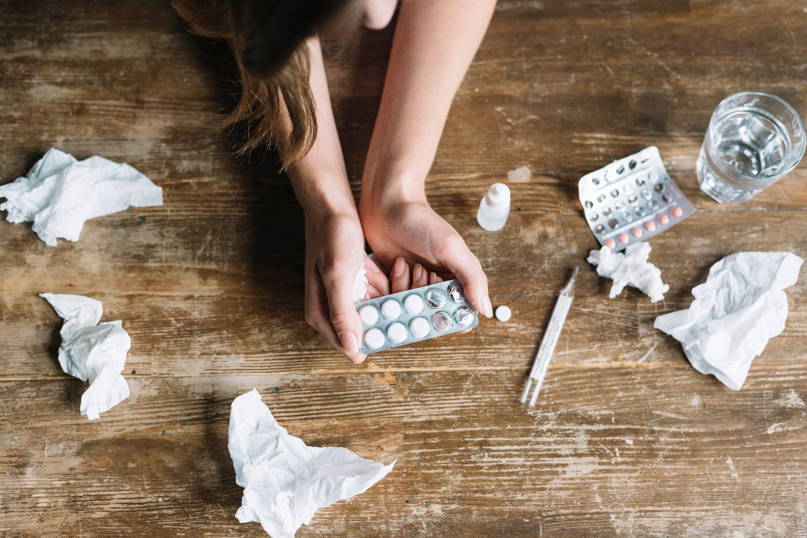
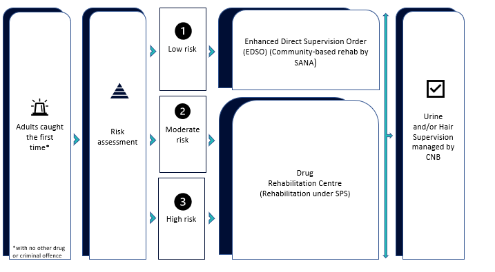
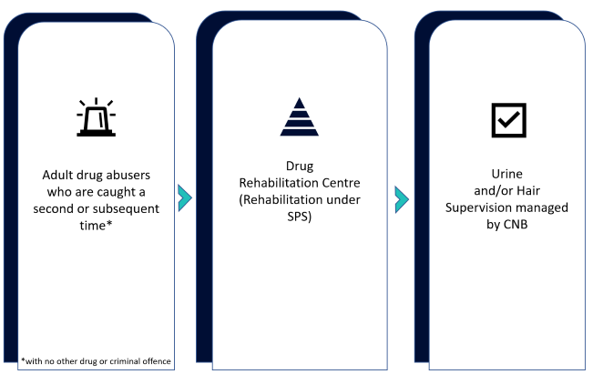
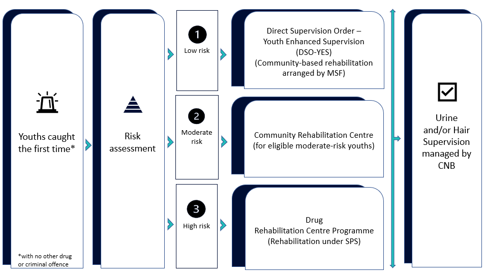
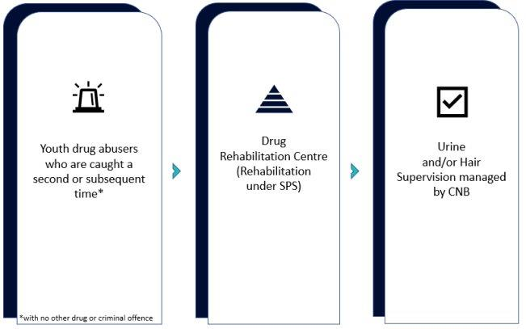

Singapore’s Addiction to Drugs
Overview of the Drug Problem in Singapore

The issue of drug abuse and addiction is one that still needs to be addressed and given due attention in Singapore. The nation-state is known for its harsh punishment of crime and has one of the toughest drug laws in the world, especially with regards to its execution of individuals for narcotic offences, which has drawn considerable international criticism and pressure for reform1.
Yet, drug trafficking remains rife, with a recent bust witnessing drugs worth S$473,000 being seized2. A total of 2,826 drug abusers were arrested in 2022, a 4% increase from the year before3. The situation amongst youth is provides further case for concern. There was a 10.1% rise in the total number of drug abusers below 20 years old arrested between 2016 and 20204.
There are a multitude of types of drugs being abused in Singapore and we look at some of the more common ones in Popular Drug Types.
Singapore’s Strategy to Address the Drug Problem
In Singapore, the Ministry of Home Affairs (MHA) via the Central Narcotics Bureau (CNB) spearheads the ongoing efforts to counter this issue. This is achieved via a comprehensive strategy consisting of the following5:
Preventive Drug Education (PDE) – Enlightening the community about the dangers of substance abuse and enhance the resilience of young individuals to remain free from drugs
There are a variety of PDE programmes that include6:
- School Talks & Exhibitions
- CNB Heritage Gallery
- Anti-Drug Workplace Talks
- Skits for Assembly Programmes at Primary & Secondary Schools
- Collaborations with the community-led National Council Against Drug Abuse (NCADA), the Ministry of Education (MOE), the National Library Board (NLB), schools and other local organisations
- Anti-Drug Ambassador Activity (AAA)
- AAA Activity booklets distributed to primary schools and community organisations
- Anti-Drug Montage Competition amongst primary schools
- Augmented Reality (AR) Exhibition
We examine the overall effectiveness of such programmes in Inhalant Abusers Arrested and Drug Rehabilitation Centre.
Structured Rehabilitation & Aftercare Programmes – Gradual rehabilitation of drug abusers, helping them overcome addiction and preparing them for life beyond Drug Rehabilitation Centres (DRCs) and prisons as well as the reintegration of released individuals into society through a coordinated aftercare network
Drug abusers are assessed accordingly based on factors such as their age, mental health and recidivism potential before they are admitted to the different rehabilitation and aftercare programmes. These programmes, most of which are run jointly by different governmental ministries and agencies, mainly consist of:
- Drug Rehabilitation Centre (DRC) – Intensive rehabilitation carried out by the Singapore Prison Service (SPS) with the type of programme, intensity and duration of rehabilitation varying according to individual rehabilitation needs7
- Drug Supervision Scheme (DSS) under the Enhanced Direct Supervision Order (EDSO) – A 5-year supervision order in which supervisees undergo regular mandatory urine tests and those who do well on supervision may be allowed to do hair analysis tests which offer longer periods in between checks7
- Community Rehabilitation Centre (CRC) – A step-down arrangement from the DRC since 2014 for eligible youth abusers aged 16 to 21 assessed to have moderate risk of drug abuse that provides case management support while minimising disruption their daily lives8
Illustrated below are some pathways of recovery ordained for adult (21 years old and above)7 and youth (below 21 years old)8 drug abusers with respect to the abovementioned programmes.




We explore in detail the demographics of DRC inmates in Drug Rehabilitation Centre.
Firm Laws & Rigorous Enforcement – Combatting the spread of drugs through intelligence, operations, and investigations, guided by robust laws and policies via collaboration with other Home Team agencies as well as local and international partners
Local & International Engagement – Active collaboration with the local community to garner strong societal support for a drug-free society as well as with like-minded international partners to uphold a global commitment to zero-tolerance of drugs
1Singapore hangs third person for drug offences in little over a week. (2023, August 3). Al Jazeera. https://www.aljazeera.com/news/2023/8/3/singapore-hangs-third-person-for-drug-offences-in-little-over-a-week
2Drugs worth S$473,000 seized by CNB; man and woman arrested. (2023, October 11). CNA. https://www.channelnewsasia.com/singapore/central-narcotics-bureau-cnb-seized-drug-trafficking-boon-keng-condominium-heroin-ice-cannabis-ecstasy-3837071
3Central Narcotics Bureau. (2023). CNB Annual Report 2022. https://www.cnb.gov.sg/docs/default-source/default-document-library/cnb-annual-report-2022.pdf
4Central Narcotics Bureau. (2023, November 15). CNB Explains. https://www.cnb.gov.sg/CNBExplains/explainer-article/cnb-explains-what-happens-when-the-suspect-is-a-young-person
5Ministry of Home Affairs. (2023, November 21). Keeping Singapore Drug-Free. https://www.mha.gov.sg/what-we-do/keeping-singapore-drug-free
6Central Narcotics Bureau. (2023, July 12). Educational Resources. https://www.cnb.gov.sg/educational-resources/core-programmes
7Central Narcotics Bureau. (2023, November 15). CNB Explains. https://www.cnb.gov.sg/CNBExplains/where-do-adult-drug-abusers-go-when-caught
8Central Narcotics Bureau. (2023, November 15). CNB Explains. https://www.cnb.gov.sg/CNBExplains/cnb-explains-where-do-youth-drug-abusers-go-when-caught